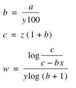
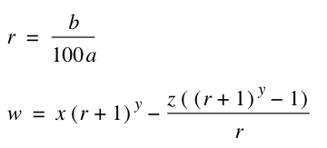
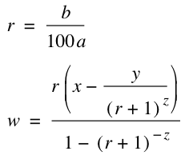
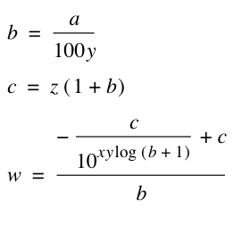

Annuity loan calculations
Here is a couple of functions used to calculate different values regarding annuity loans. The first one is for the payment value.
PaymentAnnuityLoan(
- loan sum;
- number of months (12*Years);
- number of payments pr year;
- annual interest rate )
Example:
Annuity loan for 1000.000,- The loan is taken over 15 years, payment is done every month, and the bank give us 3,5 % annual interest rate:
PaymentAnnuityLoan(1000000;12*15;12;3.5)=7148.825413
-----------------------
The next function is for calculating the number of years needed for an annuity loan. This can be used for getting an idea of how long time a loan must be taken over for a given periodic payment. Transaction fees for the bank and cost of establishing the loan has to be taken into consideration as this is not directly calculated using this formula. A more exact result can be obtained including those in the parameters.
YearAnnuityLoan(x; y; z; a )
x = loan sum
y = Number of payments pr year
z = payment sum
a = annual interest rate
The formula is calculated using the following

Example:
How long time is needed for an annuity loan, 1000.000,- paid 12 times annualy, 7000,- each month, and at a interest rate of 3,5 %
YearAnnuityLoan(1000000;12;7000;3.5)=15.36296998
-----------------------
The next one is to calculate the interest rate of a given loan.
InterestRateAnnuityLoan(x; y; z; a )
x = loan sum
y = number of months (12*Years)
z = Number of payments pr year
a = payment sum
As it is not possible to calculate this with a single formula, the calculator uses iterations to solve this. The regular annuity loan formula are used for the iterations.
Example:
We use the loan calculation from the first formula on this page, and see if we can go back to 3.5 % interest rate.
InterestRateAnnuityLoan(1000000;12*15;12;7148.825413) = 3.499984741
As the iterations stops when it is 0,01 away from the result, this will be a bit approximation, but I think the result above is more than good enough for any practical use of it.
------------------------
The next one is to check the loan balance after a certain amount of time.
BalanceAnnuityLoan(x; y; z; a; b )
Where
x = loan sum (PV)
y = number of months (12*years)
z = periodic payment
a = number of payments pr year
b = annual interest rate
The formula used for the calculation is:

w is the resulting balance.
Example:
Lets say for the loan above, we pay 7000 each month. What is the balance after 8 years?
BalanceAnnuityLoan(1000000;12*8;7000;12;3.5)=548372.9711
-------------------
The next one is for what is called "Balloon loans". Ballon loans are loans that is partly paid as a regular annuity loan, and the rest is paid on one shot after the loan period is over. This is typically used for leasing of cars, machinery, etc. When the leasing period is over, the car is sold and the rest of the loan paid in full.
PaymentBallonLoan(x; y; z; a; b )
Where
x = loan sum (PV)
y = ballon balance (rest payment)
z = months (year*12)
a = number of payments pr year
b = annual interest rate
The following formula is used:

Example:
Lets say we are going to lease a car. The cost of the car is 547.000,- - The leasing period is 5 years, and after that the rest value is estimated to 200,000.- We sell the car after 5 years, and pay the remaining loan. The interest rate on this loan is 6%. How much is the periodic payment.
PaymentBallonLoan(547000;200000;5*12;12;6)=7708.48213
----------------------
The last one in this series, is the maximum loan amounth. If you can spend lets say, 5000 each month on something, what is the maximum loan you can take over 10 years ?
annuityLoanValue(x; y; z; a )
Where
x = Number of years
y = Number of payments pr year
z = payment sum
a = annual interest rate
The formula used in this calculation is:

Example:
annuityLoanValue(10;12;5000;3.5)=507108.2393